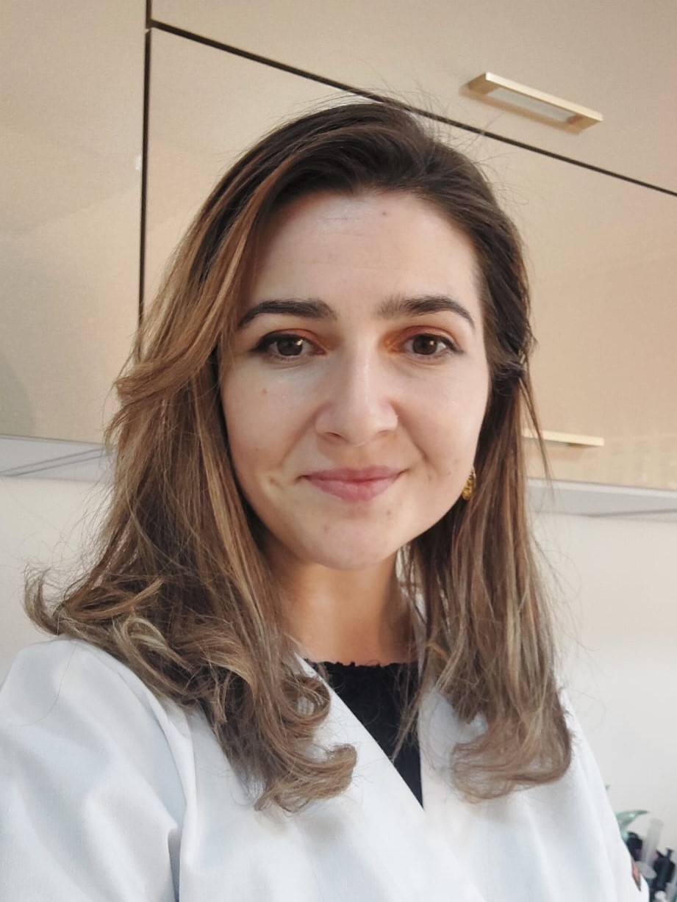
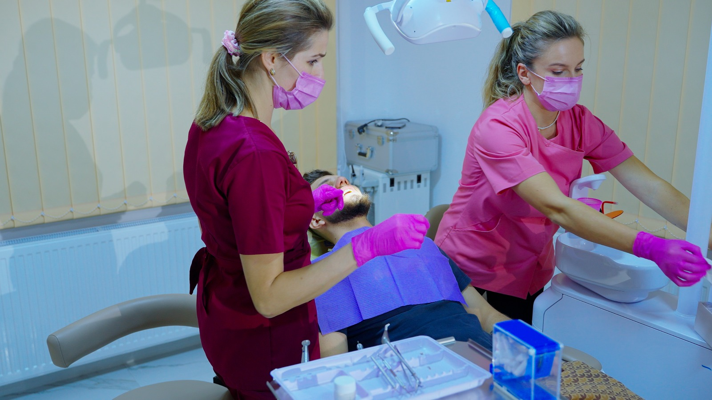
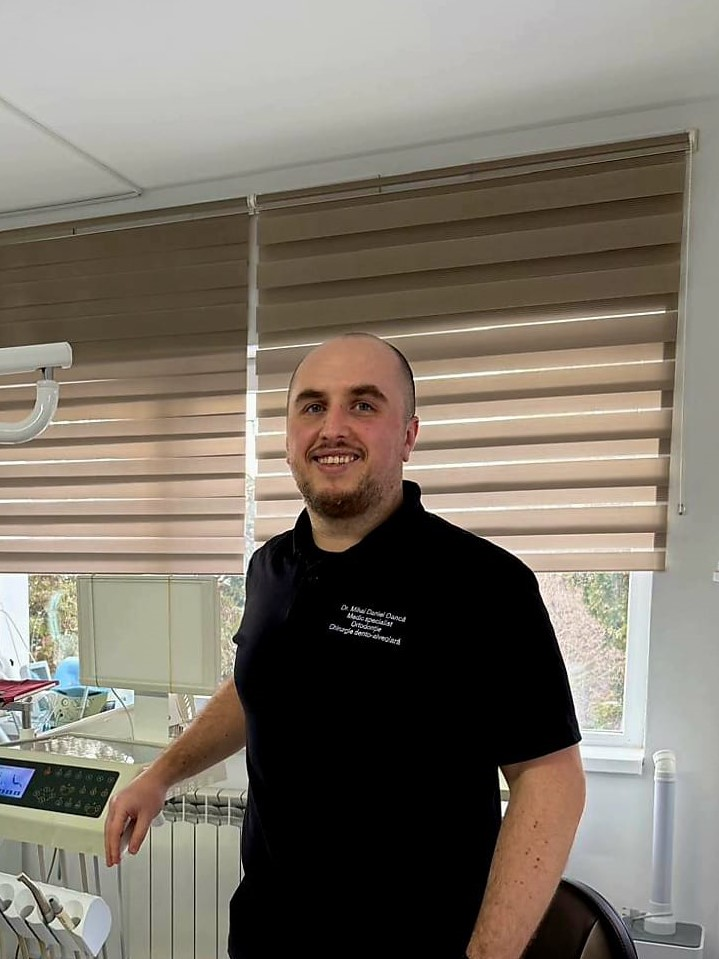
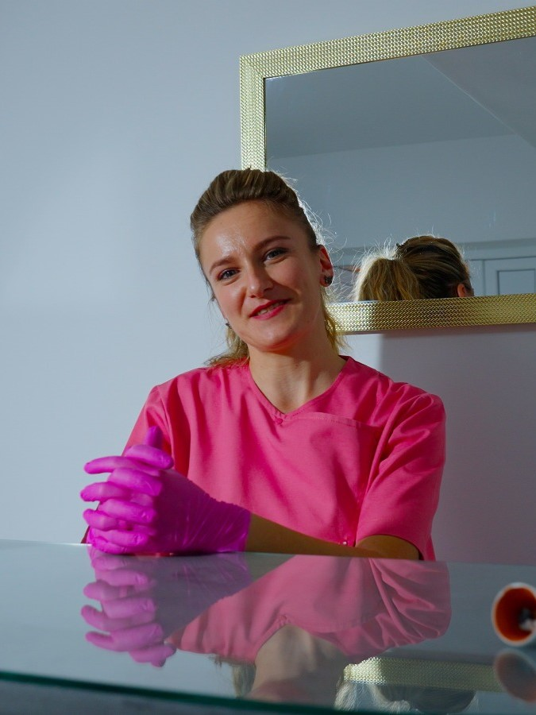

Văduva Daniela
Medic dentist
Stomatologie generală
Se ocupă de consultații, prevenție și tratamente de stomatologie generală, cu o abordare atentă și clară pentru fiecare pacient.
La HopeDent, fiecare pacient este îndrumat de medici care pun accent pe claritate, răbdare și tratamente adaptate nevoilor reale. Echipa noastră acoperă specialități importante ale stomatologiei, de la îngrijire generală până la ortodonție și chirurgie orală.
Un tratament bun începe cu o evaluare corectă și cu o comunicare clară. De aceea, medicii HopeDent explică pașii tratamentului, recomandă soluții potrivite și urmăresc confortul pacientului pe tot parcursul vizitei.
Fiecare membru al echipei aduce nu doar competențe profesionale, ci și o abordare empatică, adaptată nevoilor individuale ale pacienților. De la prima consultație până la finalizarea tratamentului, pacientul se simte susținut și informat la fiecare pas.

Fiecare medic contribuie cu experiența sa într-o ramură importantă a stomatologiei, astfel încât pacienții să poată primi îngrijire completă într-un singur loc.

Medic dentist
Stomatologie generală
Se ocupă de consultații, prevenție și tratamente de stomatologie generală, cu o abordare atentă și clară pentru fiecare pacient.

Medic specialist ortodont
Ortodonție
Oferă tratamente ortodontice pentru corectarea poziției dinților și a mușcăturii, cu planuri adaptate copiilor și adulților.
Medic specialist chirurgie orală
Chirurgie orală
Realizează intervenții de chirurgie orală cu atenție la siguranță, planificare și confortul pacientului.

Asistentă stomatologie
Asistență medicală
Asistentă cu peste 5 ani de experiență în domeniul stomatologiei, dedicată suportului pacienților și medicilor în timpul procedurilor.
Pentru noi, relația cu pacientul este la fel de importantă ca tratamentul în sine. Explicăm opțiunile disponibile, răspundem întrebărilor și recomandăm pașii necesari în funcție de fiecare caz.
Fiecare tratament pornește de la o evaluare atentă și de la înțelegerea nevoilor pacientului.
Pacientul știe ce urmează, de ce este necesar tratamentul și care sunt opțiunile disponibile.
Planul este construit în funcție de situația medicală, confort și obiectivele pacientului.